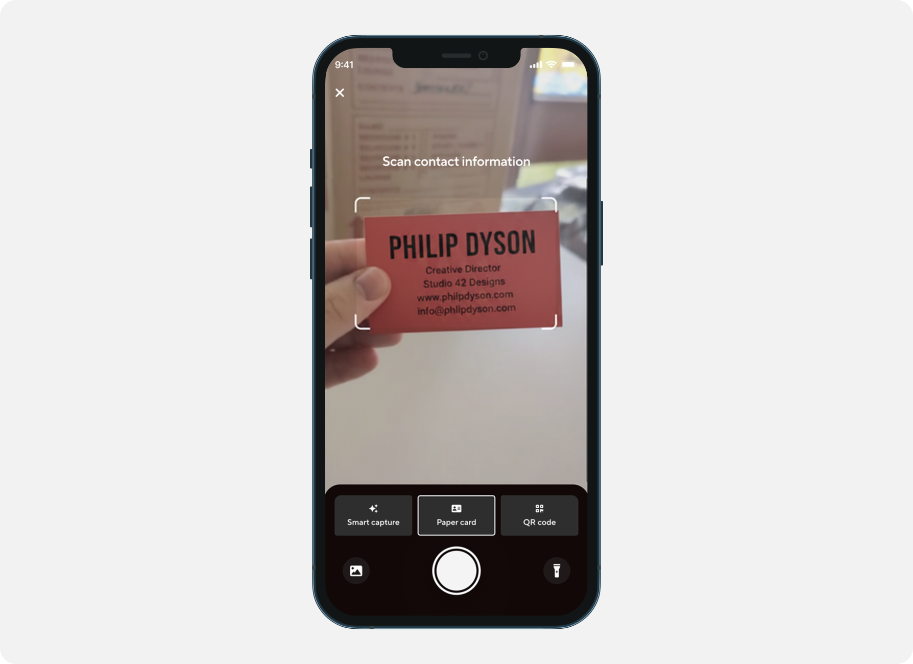
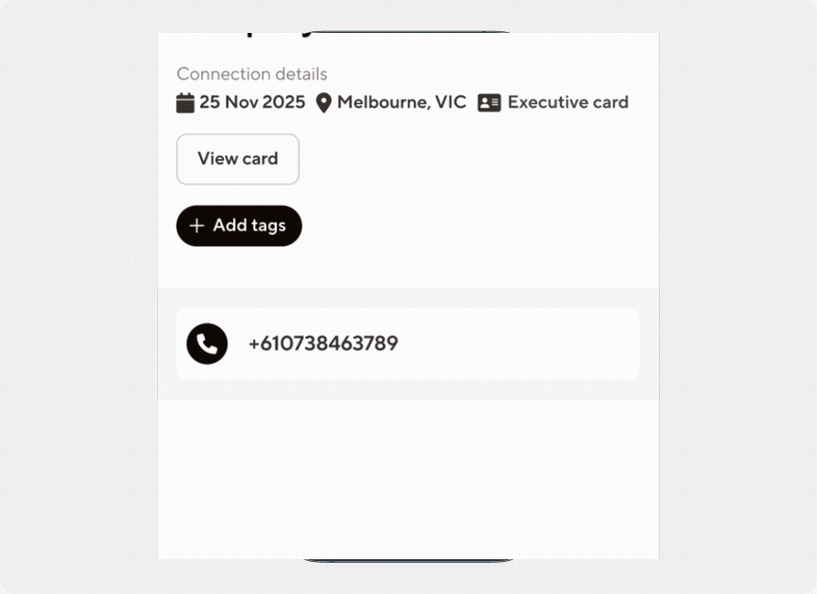

Blinq • Zero to one - new product
Event Lead Capture and closing the paper card gap
TLDR (But you should)
I led the zero-to-one design of Event Lead Capture - a badge and business card scanner that uses OCR and AI to create a fully populated contact in under two seconds. Built on the insight that the paper card is still the dominant networking tool, it's generated 200,000+ scans and 150,000 contacts in six months.
The real competitor wasn't another app - it was the paper business card.
Blinq was strong at helping users share their own details, but at events the other person often handed over a paper card instead. Every paper card handed over was a one-sided exchange: your details went digital, theirs didn't. The real competitor in the digital business card space wasn't another scanning app - it was the paper card itself. Event Lead Capture closed that loop.
You can't replicate a conference in a lab.
Research started in the field - attending product meetups and sales meetups, where it became clear sales users carried and exchanged paper cards far more than other groups. But testing a camera-based feature introduced a real constraint: lab conditions couldn't accurately replicate real-world lighting, badge quality, or card stock. The approach became layered: field observation first, then moderated user testing with mocked camera scenarios, then live testing with the founder and sales team at real events. Scrappy, but the only way to get honest signal on a feature like this.
Dark UI in a bright-brand product - and why that was the right call.
The camera direction was clear from the start - bulk badge scanners existed in the US market, but nothing that handled all contact types simultaneously.
The real design challenge was the camera view itself. Conference rooms are dark; a bright white screen shining back at someone is socially disruptive and off-brand for the moment. For a product that's otherwise light and bright, going dark felt like an anti-pattern. But it was right.
The harder question was how to keep it feeling like Blinq at all. Brand colour in the viewfinder stood out too much. The answer was restraint: strip everything back, keep it dark and neutral, but carry the brand through radius alone - in the viewport shape, the focus area, the card elements.

Scan a badge or card. Contact created in two seconds.
Step 1 - Open the scanner, choose your mode.
A new tab bar entry point opens the scanner. Users choose between three modes: event badge, paper card, or QR code. The ideal was one unified scanner - but each QR code type reads differently, and combining them caused conflicts. Three explicit modes was the cleaner, more reliable call.

Step 2 - Snap and enrich.
The user takes a photo. OCR and AI extract the contact details, which run through Blinq's enrichment platform - pulling data from multiple providers to build out a fuller contact record.

Step 3 - Contact created in under two seconds.
What previously required manual data entry is done. The contact is live in Blinq, enriched, and ready to act on - with a reference back to the original scan.

The paper card assumption was right.
- 200k+
- Scans
- 50%
- Paper business cards
- 150k+
- New contacts in Blinq
More than half of all scans were paper card scans - directly validating the original insight that the paper card was the real gap to close. In a product built around going digital, the biggest unlock turned out to be bridging the analogue world. Event Lead Capture has since become one of Blinq's most-used features, turning a one-sided exchange into a two-way capture.
Simple to understand isn't always the same as simple to build.
The instinct was one scanner, zero decisions for the user. But a smart auto-detecting scanner would have introduced more confusion, not less - the complexity would have shifted from the UI into the user's head. Three explicit modes gave clarity and control, and the numbers back it up. The lesson: simple isn't always fewer options. Sometimes it's knowing exactly when to stop chasing simplicity.